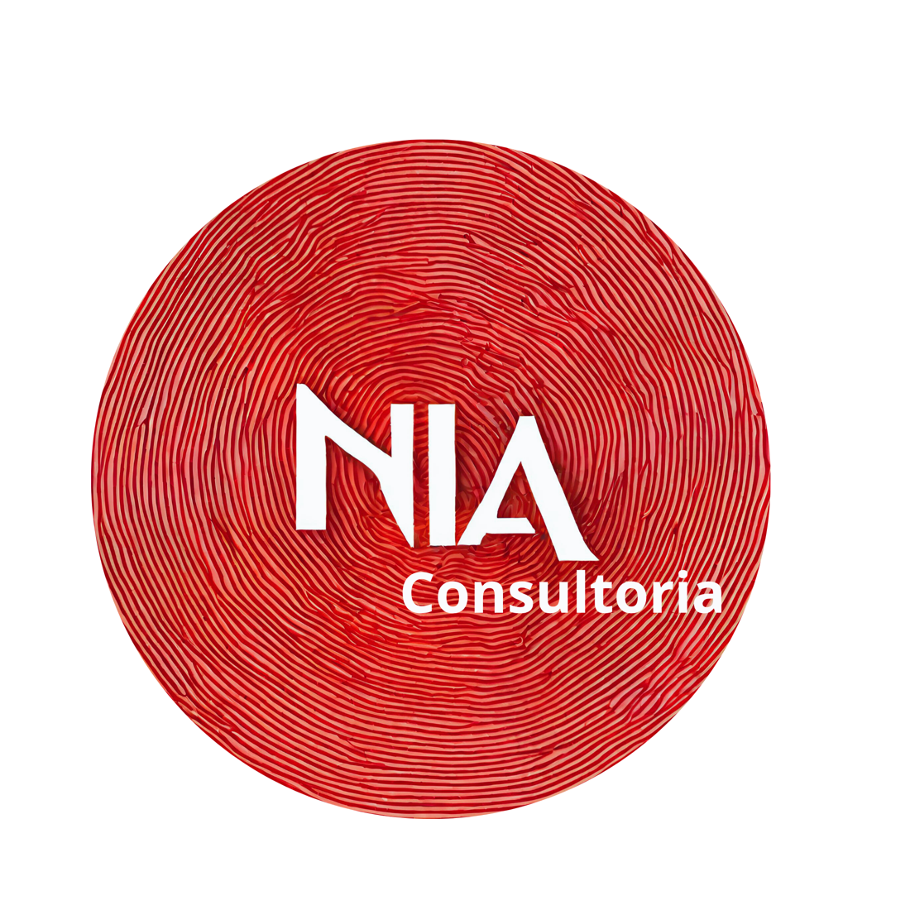

Consultoria empresarial
Planejamento estratégico, organização administrativa, mapeamento de processos, indicadores e melhoria contínua.
Apoiamos pessoas, profissionais e empresas a transformar desafios em caminhos de crescimento, com clareza, método e propósito.
Agende uma conversa
A NIA Consultoria nasceu da convicção de que pessoas e organizações podem crescer com direção, estratégia e propósito. Unimos planejamento e ação para transformar desafios em oportunidades e apoiar o crescimento pessoal, profissional e empresarial.
Fundadora e Consultora Estratégica
Com mais de 25 anos de experiência profissional, construiu sua trajetória em multinacionais como DuPont, Corteva e Orbia, atuando em gestão de projetos, melhoria de processos, excelência operacional e transformação organizacional.
Sua experiência inclui iniciativas na América Latina, conectando áreas, equipes e diferentes realidades de negócios para fortalecer processos, eficiência e resultados.
É formada em Administração, com formação em Gestão Financeira, MBA em Gestão de Processos e certificação Six Sigma Black Belt. Reúne conhecimento técnico e visão humana para apoiar empreendedores, empresas e profissionais na construção de caminhos mais claros e sustentáveis de crescimento.
de experiência profissional
Projetos e iniciativas na América Latina
Certificação em melhoria contínua
Formação em gestão e eficiência organizacional
Planejamento estratégico, organização administrativa, mapeamento de processos, indicadores e melhoria contínua.
Orientação e acompanhamento para construir objetivos claros, fortalecer competências e transformar planos em ações.
Encontros que unem experiências, ferramentas práticas e reflexões sobre desenvolvimento e transformação.
Mais do que planejar, é preciso colocar as ideias em movimento. O Método RITMO integra a abordagem da NIA para apoiar jornadas de desenvolvimento com intenção, organização e consistência.
Quero saber maisConheça alguns trechos de avaliações públicas de clientes no Google.
Avaliação pública no Google
Avaliação sobre a parceria com Óticas Hera
Avaliação pública sobre desenvolvimento profissional
Conte à NIA quais desafios você quer superar. Uma boa conversa pode ser o começo de uma grande transformação.
Conversar pelo WhatsApp